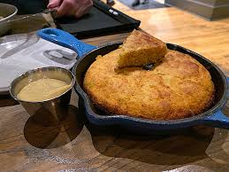

Cornbread

Description
This sweet southern cornbread recipe combines tangy buttermilk with Three Rivers corn meal in a cast iron to make the perfectly balanced sweet yet savory crubly bread.
Ingredients
6 tablespoons melted, plus butter for baking dish unsalted butter
1 cup cornmeal
3/4 cup all purpose flour
1 tablespoon sugar
1 1/2 teaspoons baking powder
1/2 teaspoon baking soda
1/4 teaspoon salt
2 large lightly beaten eggs
1 1/2 cups buttermilk
Steps
- Preheat the oven to 425º. Lightly grease an 8-inch baking dish.
- In a large bowl, mix together the cornmeal, flour, sugar, baking powder, baking soda and salt.
- In a separate bowl, mix together the eggs, buttermilk and butter. Pour the buttermilk mixture into the cornmeal mixture and fold together until there are no dry spots (the batter will still be lumpy). Pour the batter into the prepared baking dish.
- Bake until the top is golden brown and tester inserted into the middle of the corn bread comes out clean, about 20 to 25 minutes.
- Remove the cornbread from the oven and let it cool for 10 minutes before serving.